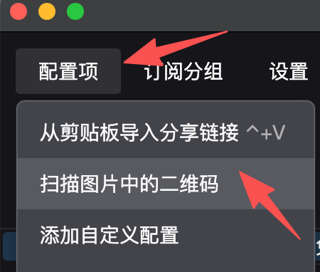

Claude Code 通过 Anthropic 的 API（编程接口，可理解为"远程服务器通道"）提供服务，服务器位于美国。 在中国大陆直接访问会被屏蔽，需要先配置代理工具（俗称"梯子"）才能正常使用。
📋 网络配置检查清单
按照以下步骤完成配置，每完成一步请在脑海中打勾：
下载代理软件
根据你的设备选择对应的代理工具下载安装：
Shadowrocket（小火箭）需在 美区 AppStore 购买下载，无法直接提供安装包。
注册美区 Apple ID 需要在电脑网页端切换至美国节点后完成，苹果手机需要单独操作，具体步骤见步骤 3 的视频教程。
下载后按视频教程安装配置，工具需要支持系统代理模式（让电脑所有软件都走代理网络）。
导入节点（首次翻墙）
安装好代理软件后，将下方临时节点导入，即可完成首次翻墙。手机扫码导入，电脑保存图片后由 V2rayN 识别导入：

📱 安卓手机（NekoBox）：
打开 NekoBox → 右上角「+」→「扫描二维码」
🚀 苹果手机（Shadowrocket）：
打开 Shadowrocket → 左上角「扫码」→ 扫描二维码
🖥️ 电脑端（Windows / macOS）如何导入二维码？
手机扫码即可，电脑无法直接扫码——但可以把二维码保存成图片，让 V2rayN 识别：
- 1 在上方二维码图片上 右键 → 「将图片存储为」，保存到桌面，文件名随意
- 2 打开 V2rayN 主界面，点击顶部菜单 「配置项」→「扫描图片中的二维码」（见右图）
- 3 在弹出的文件选择框中，找到桌面上刚保存的二维码图片，点击打开
- 4 V2rayN 主界面出现新节点，双击该节点设为活动连接，即可开始翻墙

NekoBox 添加节点

Shadowrocket 扫码

📥 还没安装代理软件？选择你的手机系统下载：
⚠️ 如果扫码时遇到错误，请点击上方「临时节点链接」复制节点地址，在代理软件中选择「从剪贴板导入」或「手动添加」。
注册谷歌邮箱（Gmail）
翻墙成功后，注册一个 Gmail 邮箱，后续注册 Claude 账号和搭建自己的节点都需要用到。
在中国大陆用网页注册 Gmail 会要求短信验证，国内手机号无法通过验证，会注册失败。
需要先翻墙，再在手机上打开 Gmail App，通过 App 完成注册。
跟随下方视频完成手机端配置和 Gmail 注册：
📱 安卓手机配置教程
🍎 苹果注册美区账号教程
🚀 小火箭配置教程
用谷歌账号完成视频教程（搭建自己的节点）
临时节点仅供首次翻墙使用，稳定性有限。跟随下方视频，用刚注册的谷歌账号搭建属于自己的免费稳定节点：
- 用谷歌账号登录 Chrome 浏览器
- 注册 Cloudflare Workers，部署代理脚本
- 在 dnshe 配置自定义域名，绑定节点地址
- 将节点导入 V2RayN / NekoBox / Shadowrocket，完成配置
📥 电脑端代理软件下载（视频中使用）：
电脑开启系统代理 / Tun 模式
打开网络工具，找到并启用以下任一选项：
- 系统代理（让电脑所有软件都走代理网络，包括命令行终端）
- 全局模式（推荐新手使用，所有流量统一走代理，最省心）
⚠️ 注意：只开启"增强模式"或"PAC 模式"是不够的，命令行终端可能无法走代理。

启用 Tun 模式（重要）
- 1 打开 V2Ray 设置 → Core 类型设置
-
2
将
VMess、Shadowsocks、VLESS、Trojan全部改为sing_box - 3 点击确定保存
- 4 回到主界面，开启「启用 Tun」开关
- 5 将代理模式设为「V4-全局 (Global)」
Tun 模式会创建虚拟网络接口，让命令行终端的流量也能走代理，比普通系统代理更彻底。
⚡ 下载大文件提速：安装 Motrix
CF 节点带宽有限，单线程下载较慢。开启 Tun 模式后，用 Motrix 替代浏览器下载，自动多线程并发，速度可提升数倍，Mac 和 Windows 体验一致。
🪟 Windows：Tun 模式已接管全局流量，Motrix 安装后直接用，无需额外配置。
🍎 macOS：同上，Tun 模式开启后 Motrix 自动走代理链，无需手动填代理地址。
导入 AI 专属分流规则（养号必备）
默认「全局模式」把所有流量都走代理，容易被风控。导入这套规则后，只有 AI 相关域名（Claude、OpenAI、Gemini、Cursor 等 30+ 平台）走代理，国内网站直连，账号 IP 更干净、更稳定。
在 V2rayN 路由设置中导入以下规则文件地址：
验证网络连通性
先打开命令行终端（一个可以输入命令的黑色窗口）：
powershell，按回车打开
terminal，按回车打开
然后在终端窗口里粘贴以下命令，按回车执行：
curl https://api.anthropic.com
✅ 成功标志：返回一段英文文字或 JSON 数据
❌ 失败标志：显示「连接超时」或长时间没有响应，说明代理未生效，请重新检查步骤 5 和步骤 6
🔧 如果验证失败但浏览器能上网：手动指定代理端口
说明系统代理没有覆盖到命令行，在终端里输入以下命令（把 7890 换成你代理工具显示的端口号）：
set HTTPS_PROXY=http://127.0.0.1:7890
端口号通常在代理工具设置里能看到，常见值：7890、7891、1080、10809。
安装程序也会自动尝试这些常用端口，大部分情况下不需要手动设置。
🔧 常见问题
🐢 连接很慢怎么办？
- 尝试切换节点（代理服务器的位置）
- 选择延迟（响应时间，越低越好）低的境外节点
- 关闭其他占用网络的程序
❌ 连接超时怎么办？
- 检查代理工具是否已启动运行
- 确认已开启系统代理（全局模式）
- 重启代理工具后重试步骤 4